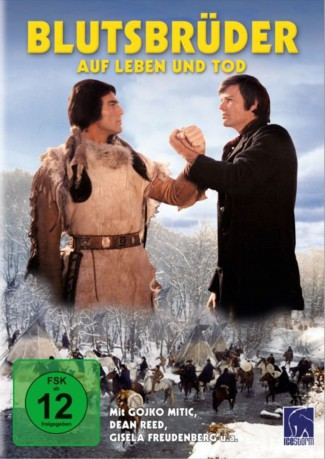

#2214 Blutsbrüder - Zwischen Leben und Tod
Alternativ: Blutsbrüder
 
 IMDB-Wertung: 5.2 / 10
IMDB-Wertung: 5.2 / 10  Metascore: 0
Metascore: 0 
An Indian village is attacked by the American army. The Indians are cruelly killed. One of the soldiers called Harmonika is disgusted by the murders of the innocent women and children. He decides to leave the army. He goes to live with the Indians and falls in love with an Indian woman. He becomes a friend with Harter Felsen, one of the bravest Indians. He understands that they are not beasts and he respects them.
Jahr: 1975
Dauer: 92 Minuten
FSK: 12
Land: Ost-Deutschland Studio: Icestorm EntertainmentTonspuren:
Untertitel:
Auflösung: 1080p (1808x1080) Größe: 5601 MB
Genre: Drama, Western
Regisseur: Werner W. Wallroth
Drehbuch: Wolfgang Ebeling, Dean Reed
Soundtrack: Karl-Ernst Sasse
Darsteller:
- Dean Reed als Harmonika
 Gojko Mitic als Harter Felsen
Gojko Mitic als Harter Felsen- Gisela Freudenberg als Rehkitz
- Jörg Panknin als Joe
- Cornel Ispas als Big Fred
- Iurie Darie als Bill Simmons
- Sina Fiedler-Engel als Servierin
- Manea Alexandru als Leutnant
- Eugenia Bosânceanu als Frau von Simmons
- Toma Dimitriu als Grauer Elch
- Pedro Hebenstreit als 2.Gast
- Fred Ludwig als 1.Gast
- Joachim Schönitz als Barkeeper
- Elena Sereda als Dicke Frau
Datei: X:\HD-Western-Collections\DDR-Western\Blutsbrüder - Zwischen Leben und Tod (1975, FSK12, 1808x1080).mkv seit 21.10.2015
Festplatte: HD Eastern+Western
 Es gibt insgesamt 15 Filme in der Gruppe 'HD-Western-Collections\DDR-Western'
Es gibt insgesamt 15 Filme in der Gruppe 'HD-Western-Collections\DDR-Western'